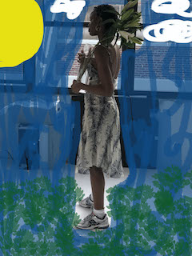
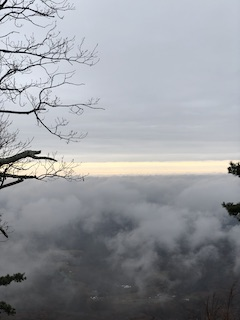

These photos are a collection of moments I have taken in the past year or so. All of which had taken place before COVID-19. There photos are taken in various places like at school in New York, to a short weekend trip to visit my Aunt in North Carolina, to some exciting work opportunities! This is my website for 2020 Journalism and Design Toolkit Course for Professor Jason Das This is a link to an external site.
 
To be navigated back to my homepage, click here